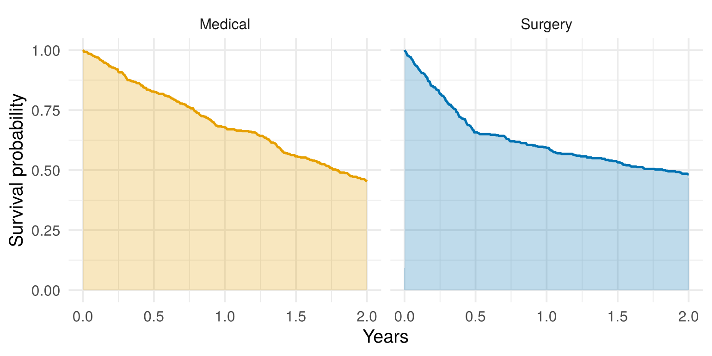

cox.zph() flags your main exposure (treatment, say), not just a covariate;
the Kaplan–Meier curves cross, or come together and then separate;
you expect the effect to change over time: an operation with early risks and later benefits, or a test result that predicts the near future better than the distant one.
If the problem is only with a covariate you’re adjusting for, stratifying on it (Section 3.5) is usually enough.
This chapter builds on Chapter 3.
NoteIn this chapter
The question. When the hazard ratio isn’t constant, a single HR can be badly misleading. What should you report instead?
By the end of this chapter you will be able to:
recognise when non-proportional hazards matter, and when they don’t;
estimate a separate HR for each period of follow-up, and an HR that changes smoothly over time with tt();
estimate and interpret the restricted mean survival time (RMST), and explain why the choice of time horizon matters;
interpret an accelerated failure time model’s time ratio.
10.1 First: does it matter?
Chapter 3 showed how to check the proportional hazards assumption. Before changing your analysis, ask two questions.
Which variable fails? If it’s a covariate you’re only adjusting for, stratify on it: each level gets its own baseline hazard, the variable gets no HR, and the HRs you care about are unaffected (Exercise 3.1 did this for ECOG). If a continuous covariate fails, split it into groups and stratify, or use the methods below. Problems with the main exposure need more thought, because they change what you can report.
How badly does it fail? With a lot of data, cox.zph() can flag tiny, unimportant changes. Always look at the plot. If the line is roughly flat, with small wiggles, a single HR is a fair summary. If it clearly changes direction or size, a single HR misleads.
10.2 A treatment whose effect reverses
Here’s a simulated trial where it matters. 800 patients are randomised to surgery or medical treatment. Surgery carries early risks: for the first 6 months the hazard of death is twice as high. After that, it’s half as high. (The code is folded away; open it if you’re interested.)
Show the simulation code
set.seed(2027)n <-800surgery <-rep(0:1, each = n /2) # 400 medical (0), 400 surgery (1)u <-runif(n)h0 <-0.4# medical: constant hazard, 0.4 per year# Surgery: twice the hazard for 6 months, then half the hazardt_medical <--log(u) / h0t_surgery <-ifelse(-log(u) <2* h0 *0.5,-log(u) / (2* h0),0.5+ (-log(u) -2* h0 *0.5) / (0.5* h0))t_event <-ifelse(surgery ==1, t_surgery, t_medical)t_cens <-runif(n, 2, 5) # follow-up ends 2-5 years after entrytrial <-data.frame(surgery = surgery,time =pmin(t_event, t_cens),status =as.numeric(t_event <= t_cens))
#> chisq df p
#> surgery 46.8 1 7.7e-12
#> GLOBAL 46.8 1 7.7e-12
The log-rank test (p = 0.2) and the Cox model (HR 0.89, 95% CI 0.76 to 1.06) both say “no clear difference”. That’s badly misleading: surgery doubles the early hazard and halves the later one. The two effects cancel out in a single number. cox.zph() flags the problem strongly (p < 0.001). Here are the alternatives.
10.3 Option 1: a separate HR for each period
You met this in Section 3.6. Split follow-up at a time chosen from the plot, or from clinical knowledge, and estimate an HR for each period:
In the first 6 months, surgery more than doubles the hazard (HR 2.21, 95% CI 1.65 to 2.95). After 6 months it halves it (HR 0.52, 0.42 to 0.65). Those are close to the true values we built in (2 and 0.5), and cox.zph(cox_period) shows no remaining problem. This is easy to explain, but it needs a sensible cut point, chosen before looking at p-values.
10.3.1 Practice: a separate HR for each period
This is a live exercise: edit the code, click Run Code, and your answer is checked automatically. See Section 1.4.1 if you haven’t used one before.
The simulated surgery trial is loaded. Split follow-up at 1 year instead of 6 months, and estimate the surgery HR in each period. Replace each ______, then click Run Code.
NoteHint 1
Time is in years, so 1 year is cut = 1.
NoteHint 2
After splitting, each row runs from tstart to time: Surv(tstart, time, status).
With the split at 1 year, the first period mixes the harmful first 6 months with 6 months of benefit, so its HR is smaller (about 1.4) than the true early HR of 2. The HR after 1 year (about 0.5) matches the true later effect. A cut point in the wrong place blurs the picture, which is why it should come from the plot or from clinical knowledge.
10.4 Option 2: an HR that changes smoothly over time
Sometimes an effect fades gradually rather than switching at one moment. The tt() (“time transform”) argument in coxph() lets the log-HR change with time, for example in proportion to log(time).
The real veteran lung cancer trial is a classic example. The Karnofsky performance score strongly predicts survival, but cox.zph() shows its effect changes:
vet <- survival::veterancox.zph(coxph(Surv(time, status) ~ trt + karno, data = vet))
#> chisq df p
#> trt 0.307 1 0.57942
#> karno 11.959 1 0.00054
#> GLOBAL 13.577 2 0.00113
So we let the Karnofsky effect change with log(time):
cox_tt <-coxph(Surv(time, status) ~ trt + karno +tt(karno),data = vet,tt =function(x, t, ...) x *log(t))summary(cox_tt)$coefficients
A 10-point higher score goes with a 44% lower hazard in the first week (HR 0.56), but only a 5% lower hazard at a year (HR 0.95). That’s the same story as ph.karno in Chapter 3: a doctor’s rating of how well a patient is now predicts the near future much better than the distant future.
The functional form (here log time) is a choice you make, so check it against the cox.zph() plot. The survival package’s guide to time-dependent covariates (Therneau et al., n.d.) covers tt() in more detail.
10.5 Option 3: the restricted mean survival time
The restricted mean survival time (RMST) avoids hazards altogether. It is the average survival time up to a chosen time horizon, \(\tau\) (“tau”). For example, “over the first 2 years, patients survived for 1.40 years on average”. It equals the area under the KM curve up to \(\tau\):
Show the plotting code
km_trial <-survfit(Surv(time, status) ~ surgery, data = trial)# Survival on a fine grid of times up to 2 years, for shadinggrid <-summary(km_trial, times =seq(0, 2, by =0.005), extend =TRUE)stairs <-data.frame(time = grid$time,surv = grid$surv,arm =ifelse(grid$strata =="surgery=1", "Surgery", "Medical"))ggplot(stairs, aes(time, surv, fill = arm, colour = arm)) +geom_area(alpha =0.25, position ="identity") +geom_line(linewidth =0.8) +facet_wrap(~ arm) +scale_fill_manual(values =c("#E69F00", "#0072B2")) +scale_colour_manual(values =c("#E69F00", "#0072B2")) +coord_cartesian(xlim =c(0, 2), ylim =c(0, 1)) +labs(x ="Years", y ="Survival probability") +theme_minimal(base_size =13) +theme(legend.position ="none")

Figure 10.2: The RMST up to 2 years is the shaded area under each KM curve. The difference in RMST is the difference between the two areas.
The survRM2 package compares two groups’ RMSTs:
rmst_2y <-rmst2(time = trial$time, status = trial$status,arm = trial$surgery, tau =2)rmst_2y
#>
#> The truncation time: tau = 2 was specified.
#>
#> Restricted Mean Survival Time (RMST) by arm
#> Est. se lower .95 upper .95
#> RMST (arm=1) 1.256 0.041 1.176 1.336
#> RMST (arm=0) 1.404 0.035 1.336 1.472
#>
#>
#> Restricted Mean Time Lost (RMTL) by arm
#> Est. se lower .95 upper .95
#> RMTL (arm=1) 0.744 0.041 0.664 0.824
#> RMTL (arm=0) 0.596 0.035 0.528 0.664
#>
#>
#> Between-group contrast
#> Est. lower .95 upper .95 p
#> RMST (arm=1)-(arm=0) -0.148 -0.252 -0.043 0.006
#> RMST (arm=1)/(arm=0) 0.895 0.826 0.969 0.006
#> RMTL (arm=1)/(arm=0) 1.248 1.068 1.459 0.005
TipHow to read this output
RMST for each arm (arm=1 is surgery, arm=0 medical): the average survival time, in years, over the first 2 years, with a 95% CI.
RMST (arm=1)-(arm=0): the difference. This is usually the number to report.
The ratio of RMSTs, and the RMTL rows (restricted mean time lost), are other ways of summarising the same thing.
Over the first 2 years, surgery patients survived on average 0.15 years (about 54 days) less than medical patients (95% CI 0.04 to 0.25 years less). But the answer depends on the horizon you choose:
Time horizon \(\tau\)
RMST, medical
RMST, surgery
Difference (surgery − medical)
1 year
0.83
0.72
−0.11 years
2 years
1.40
1.26
−0.15 years
4 years
2.03
2.03
0.00 years
By 4 years, the later benefit of surgery has exactly made up for the early losses. All three answers are correct: they answer different questions. That’s why \(\tau\) must be chosen in advance, for a clinical reason (the length of time that matters to patients, or the follow-up most patients completed), and not picked afterwards to give the most interesting result.
10.5.1 Interactive app: choosing the time horizon
In this app you move \(\tau\) and watch the RMSTs change. With the default settings, it uses exactly the trial above, so the numbers match the table. Changing the effect settings, or the seed, simulates a new trial. The bottom plot shows the RMST difference for every possible \(\tau\), with your choice marked.
{const r0 =rmst(rmFits[0], rm.tau), r1 =rmst(rmFits[1], rm.tau), d = r1 - r0;const shade = [];for (const [a, lab] of [[0,"Medical"], [1,"Surgery"]]) {let s =1, j =0;const f = rmFits[a];for (let t =0; t <= rm.tau+1e-9; t += rm.tau/300) {while (j < f.length&& f[j].time<= t) { s = f[j].surv; j++; } shade.push({time: t,surv: s,arm: lab}); } }const lines = rmFits.flatMap((f, a) => f.filter(r => r.time<=4.5).map(r => ({...r,arm: a ?"Surgery":"Medical"})));const top = Plot.plot({height:280,y: {domain: [0,1],grid:true,label:"Survival probability"},x: {label:"Years →",domain: [0,4.5]},color: {legend:true,domain: ["Medical","Surgery"],range: ["#E69F00","#0072B2"]},marks: [ Plot.areaY(shade, {x:"time",y1:0,y2:"surv",fill:"arm",fillOpacity:0.15,curve:"step-after"}), Plot.line(lines, {x:"time",y:"surv",stroke:"arm",strokeWidth:2,curve:"step-after"}), Plot.ruleX([rm.tau], {stroke:"#333",strokeDasharray:"4,3"}) ] });const bottom = Plot.plot({height:200,x: {label:"Time horizon τ (years) →",domain: [0,4.5]},y: {label:"RMST difference (years)",grid:true},marks: [ Plot.ruleY([0], {stroke:"#888"}), Plot.line(rmCurve, {x:"tau",y:"diff",stroke:"#333",strokeWidth:2}), Plot.dot([{tau: rm.tau,diff: d}], {x:"tau",y:"diff",fill: d <0?"#D55E00":"#009E73",r:6}) ] });const sign = v => (v >=0?"+":"−") +Math.abs(v).toFixed(2);returnhtml`<div>${top} <div class="estimates"> <div class="est"><span>RMST, medical (to ${rm.tau} y)</span><b>${r0.toFixed(2)} y</b><small> </small></div> <div class="est"><span>RMST, surgery (to ${rm.tau} y)</span><b>${r1.toFixed(2)} y</b><small> </small></div> <div class="est ${d <0?"bad":"good"}"><span>Difference (surgery − medical)</span><b>${sign(d)} y</b><small>about ${Math.round(Math.abs(d) *365)} days ${d <0?"less":"more"}</small></div> </div>${bottom}</div>`;}
TipThings to try
For each one, predict first, then pick the scenario and check.
On the Default scenario, move \(\tau\) from 0.5 to 4.5 years. Predict: at what horizon does surgery stop looking worse?
Predict: what does the bottom plot look like if surgery has no early harm? Then pick No early harm (HR 0.5 throughout).
Predict: if the later benefit is smaller, will surgery ever catch up within 4.5 years? Then pick Smaller late benefit (HR 0.8), and then Early harm lasts a year.
NoteAnswers: what you should see
The difference starts negative (surgery patients lose time early: −0.11 years at 1 year and −0.15 at 2 years), shrinks (−0.09 at 3 years), and crosses zero at 4 years. By 4.5 years surgery is ahead (+0.07). The shaded areas show why: the early gap in the curves is eventually outweighed by the later one. This is why τ must be chosen in advance.
The difference is positive at every horizon, and grows steadily (+0.25 years at 2 years, +0.72 at 4). When hazards are proportional, the RMST and the HR tell the same story, and the choice of τ only changes the size of the benefit, not its direction.
No. With a later HR of 0.8, surgery never catches up within 4.5 years (−0.22 years at 4 years). If the early harm lasts a year, it doesn’t either (−0.34 at 4 years). Whether surgery is “worth it” depends on how big and how long-lasting each effect is, and on the time horizon that matters to patients.
10.5.2 Practice: RMST at 3 years
This is a live exercise: edit the code, click Run Code, and your answer is checked automatically. See Section 1.4.1 if you haven’t used one before.
Compare the two arms’ RMSTs over the first 3 years. The first run downloads the survRM2 package. Replace each ______, then click Run Code.
NoteHint 1
The arm variable is surgery, and the horizon is tau = 3 (years).
TipSolution
rmst_3y <-rmst2(time = trial$time, status = trial$status,arm = trial$surgery, tau =3)rmst_3y
Over the first 3 years, surgery patients survived on average 1.69 years, and medical patients 1.78 years: a difference of −0.09 years (95% CI −0.25 to 0.07). By 3 years the later benefit has made up most of the early losses, so the difference is small and not significant, between the 1- and 4-year results in the table above.
10.6 Option 4: survival at fixed times
The simplest absolute measure, from Chapter 2, also works whatever the hazards do:
km_trial <-survfit(Surv(time, status) ~ surgery, data = trial)s <-summary(km_trial, times =c(0.5, 4))data.frame(arm = s$strata, years = s$time, survival =round(s$surv, 2))
At 6 months, 83% of medical patients but only 66% of surgery patients were alive. At 4 years, it’s 20% versus 31%. Reporting both, alongside the KM curves, tells the story clearly.
10.7 Option 5: accelerated failure time models
A different kind of regression model describes effects on survival time rather than on the hazard. An accelerated failure time (AFT) model estimates a time ratio: how many times longer (or shorter) one group’s survival times are. survreg() in the survival package fits them. Here it is for sex in the lung data from Chapters 1–3:
lung <- survival::lunglung$status <- lung$status -1lung$sex <-factor(lung$sex, levels =1:2, labels =c("Male", "Female"))aft <-survreg(Surv(time, status) ~ sex, data = lung, dist ="weibull")exp(coef(aft))[2] # time ratio, women vs men
#> sexFemale
#> 1.485242
exp(confint(aft))[2, ] # its 95% CI
#> 2.5 % 97.5 %
#> 1.156491 1.907447
Women’s survival times are about 1.49 times as long as men’s (95% CI 1.16 to 1.91). Many people find “women lived about 50% longer” easier to grasp than “women had a 41% lower hazard”.
AFT models make their own assumption: that the time ratio is the same throughout follow-up, and that survival times follow the chosen distribution (here Weibull). So they’re an alternative effect measure, not a cure for crossing curves like those in the surgery trial.
10.8 Choosing an approach
Situation
Suggested approach
A covariate you’re adjusting for fails PH
Stratify on it
The effect switches at a clear time
A separate HR for each period
The effect fades or grows gradually
tt(), checked against the cox.zph() plot
You want one summary that doesn’t depend on PH
RMST at a pre-specified \(\tau\), plus survival at fixed times
You’d like to describe effects on survival time
An AFT model (time ratio)
Whatever you choose, show the KM curves: they tell the reader what is happening, whichever summary you report alongside them.
Quick quiz
Choose an answer to each question. You’ll get instant feedback and can change your answer as often as you like.
import {quiz} from"./js/survtools.js"
quiz([ {"q":"<code>cox.zph()</code> flags age, a covariate you're adjusting for, but not the treatment. What is usually the simplest fix?","options": ["Stratify on age groups","Report the RMST instead of the treatment HR","Drop age from the model","Ignore it: only the treatment matters" ],"answer":0,"why":"Stratifying on a covariate gives each stratum its own baseline hazard. The treatment HR is unaffected, and you don't need an HR for age.","hints": ["","The treatment HR is fine here. The problem is only with a covariate.","Age is a confounder, so it needs to stay in.","A badly modelled covariate can still distort the treatment estimate." ] }, {"q":"KM curves cross at 2 years, and the overall Cox HR is 0.95 (p = 0.6). What can you conclude?","options": ["The treatment has no effect","A single HR may hide opposite effects before and after the crossing","The Cox model is wrong, so the data can't be analysed","The treatment is slightly beneficial throughout" ],"answer":1,"why":"Opposite effects in different periods can cancel out in a single HR. Look at period-specific HRs, the RMST and survival at fixed times.","hints": ["A single HR near 1 can come from effects that cancel out.","","There are several good alternatives to a single HR.","Crossing curves mean the effect isn't the same throughout." ] }, {"q":"Why must the RMST time horizon τ be chosen in advance?","options": ["The RMST difference can change, even in sign, depending on τ","survRM2 only accepts whole numbers of years","The RMST doesn't depend on τ","To make the confidence interval narrower" ],"answer":0,"why":"In the surgery trial, the RMST difference was −0.15 years at 2 years and 0.00 at 4 years. Choosing τ afterwards lets you pick the answer you like.","hints": ["","τ can be any time within follow-up.","The surgery example gave different answers at 1, 2 and 4 years.","This is about avoiding bias, not precision." ] }, {"q":"An AFT model gives a time ratio of 1.5 for women vs men. What does it mean?","options": ["Women's survival times are about 1.5 times as long as men's","Women's hazard is 1.5 times men's","50% more women survive","Women survive 1.5 years longer" ],"answer":0,"why":"A time ratio stretches (or shrinks) the whole distribution of survival times. 1.5 means about 50% longer survival times.","hints": ["","That would be a hazard ratio, from a Cox model.","It's about how long people survive, not the proportion surviving.","It's a ratio, not a difference in years." ] }])
10.9 Summary
ImportantKey points
If only a covariate fails PH, stratify on it. Problems with the main exposure change what you should report.
A single HR can hide opposite effects at different times, as in the surgery trial (HR 0.89 overall, but 2.2 early and 0.5 later).
A separate HR for each period (survSplit()) is easy to explain. tt() lets an effect change smoothly with time.
The RMST is the average survival time up to a horizon τ, the area under the KM curve. It doesn’t rely on PH, but its answer depends on τ, so choose τ in advance.
Survival at fixed times and the KM curves themselves always help.
AFT models describe effects as time ratios, with their own assumptions.
Answering the question. Report what the data show over time: the KM curves, survival at clinically important times, and either period-specific HRs or the RMST at a horizon chosen in advance. In the surgery trial, these reveal early harm and later benefit, which the single HR of 0.89 hid completely.
10.10 Further reading
All of these are free to read online unless marked otherwise. The whole book’s reading list, grouped by topic, is in Appendix C.
Uno et al. (2014): Start here. Why and how to report the RMST instead of, or alongside, the hazard ratio.
Royston and Parmar (2013): More advanced. The RMST in detail, including how to choose the time horizon.
Stensrud and Hernán (2020): Why hazard ratios often change over time. (May need institutional access.)
Therneau et al. (n.d.): The survival package’s guide to time-dependent covariates and coefficients, including tt().
Royston, Patrick, and Mahesh K. B. Parmar. 2013. “Restricted Mean Survival Time: An Alternative to the Hazard Ratio for the Design and Analysis of Randomized Trials with a Time-to-Event Outcome.”BMC Medical Research Methodology 13: 152. https://doi.org/10.1186/1471-2288-13-152.
Uno, Hajime, Brian Claggett, Lu Tian, et al. 2014. “Moving Beyond the Hazard Ratio in Quantifying the Between-Group Difference in Survival Analysis.”Journal of Clinical Oncology 32 (22): 2380–85. https://doi.org/10.1200/JCO.2013.53.2442.